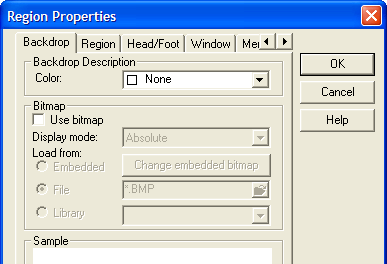
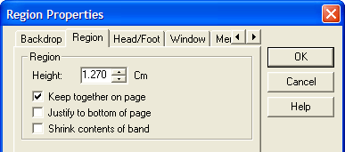
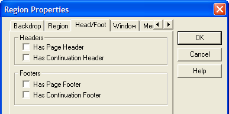
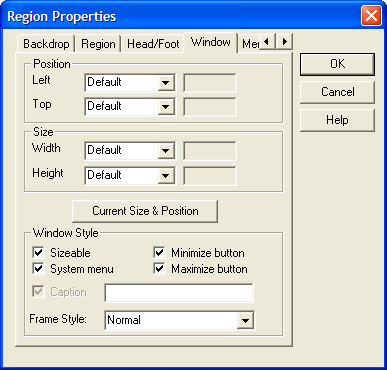
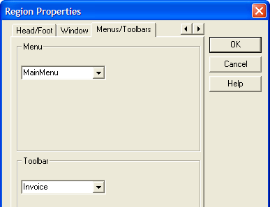

Report Region Properties
|
Item |
Description |
|
Backdrop Description |
Sets the color of the region. |
|
Use Bitmap |
Enables bitmap selection controls. |
|
Display Mode |
Indicates which mode to use with a background bitmap. The options are: "Absolute" - prints one image pixel for each printer pixel. Generally, not used for reports. "Stretch" - Scales the image both horizontally and vertically to fit the specified space. Can distort images. "Tile" - repeats the image as many times in both horizontal and vertical directions as Needed to fit the specified space. "Best Fit" -Scales the image to fit the specified space. Does not distort images. |
|
Load from |
The filename and location of the image. |

|
Item |
Description |
|
Height |
The height of the region on report layout. |
|
Keep together on page |
Indicates whether the report elements of the region must be kept together on the same page. |
|
Justify to bottom of page |
Indicates whether the region can be stretched to the bottom of the page. |
|
Shrink contents of band |
Indicates whether the region can be shrunk. Regions in page headers and footers will not shrink even if this property is checked. |

|
Item |
Description |
|
Has Page Header |
Hides or displays the page header for the region. |
|
Has Continuation Header |
Hides or displays the page continuation header for the region. |
|
Has Page Footer |
Hides or displays the page footer for the region. |
|
Has Continuation Footer |
Hides or displays the page continuation footer for the region. |

|
Item |
Description |
|
Left, Top |
Sets the left and top coordinates of the window. |
|
Width, Height |
Sets the width and height dimensions of the window. |
|
Mode and Value |
If the mode of any of the Position or Size values is set to "Percentage", then the value is interpreted as a percentage of the Alpha Five window. In all other cases, the values are in inches. If the mode of any of the Position or Size values is set to "Percentage", then the property setting is then "Percent". If the mode is set to "Inches" or "Cm", the value of the property setting is then "Absolute". If the mode is set to "Default, the value of the property setting is "Default". In this case the size of the form is set by the size of the form in the design window. If the mode is set to "Use Form Width" or "Use Form Height", the value of the property setting is "Form". In this case the size of the form is set by the size of the design window. |
|
Sizeable |
When checked, the user can resize the report window. |
|
System Menu |
When checked, there is a system menu in the upper left corner of the report window. |
|
Minimize Button |
When checked, there is a minimize button in the upper right corner of the report window. |
|
Maximize Button |
When checked, there is a maximize button in the upper right corner of the report window. |
|
Has Caption |
When checked, the caption field is enabled. |
|
Caption |
The name of the report window. |
|
Frame Style |
Sets the style of the window to "Normal" (modeless), "Dialog" (modal), or "Tool" (?). |

|
Item |
Description |
|
Menu |
Sets the menu that appears when previewing a report. |
|
Toolbar |
Sets the toolbar that appears when previewing a report. |

See Also
Report Properties, Report Detail Properties, Report Group Properties
Supported By
Alpha Five Version 5 and Above